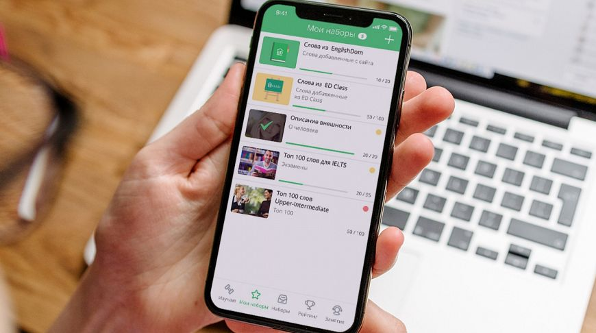

ТОП-7 приложений для изучения английского языка для iOS и Android
Есть пара свободных минут, пока вы стоите в очереди за утренним кофе или едете в транспорте на работу? Почему бы не заняться самообразованием? Мы подобрали для вас лучшие приложения для изучения английского! Ловите горячую десятку!
LinguaLeo
Один из секретов успеха этого приложения для изучения английского языка — игровая форма обучения. Ваш собственный симпатяга-львенок жаждет фрикаделек, получить которые можно только при прохождении уроков.
Еще одно безусловное преимущество платформы LinguaLeo — наличие огромного количества медиа-материалов (фильмы, книги, песни, музыкальные и образовательные видеоролики и т.д.), с которыми вы можете работать в процессе обучения.
ED Words
Приложение от онлайн-школы английского языка Englishdom помогает запоминать новые слова и расширять свой лексикон. ED Words подходит и новичкам, и пользователям с английским выше среднего. Приложение простое и понятное, есть 350 готовых тематических наборов, а также возможность создавать свои наборы и отслеживать прогресс. Используется четыре типа упражнений на запоминание слов и метод интервальных повторений.
А еще есть геймификация: можно соревноваться с друзьями, а когда вы успешно учите слова, то получаете очки и бонусы, которые дают премиум-доступ к приложению.
Words
Лучшие приложения для изучения английского языка сложно представить без сервиса Words — в свое время это признала даже редакция Apple, назвав его лучшей новой платформой.
Приложение идеально подходит для изучения английских слов и расширения словарного запаса. В его базе около 40 тысяч слов и 330 уроков. Первые из них доступны бесплатно, дальше необходимо платить. Главные преимущества приложения — возможность работать в офлайн-режиме и самостоятельно создавать уроки, ставя программе необходимые вам задачи (последнее доступно только в платной версии).
Easy ten
Приложение для тех, у кого мало времени, но есть большое желание освоить английский язык. Каждый день сервис будет подбирать 10 новых иностранных слов, которые вам нужно будет выучить, закрепив знание несложными тренировками. Уже к концу месяца ваш словарный запас пополнится минимум 300 новыми словами.
Приложение также запоминает и учитывает ваши ошибки в тестах, давая потом возможность повторить и запомнить особенно трудные слова.
Memrise
Еще одно признанное лучшим приложение. Сервис основан на научной методике, позволяющей изучать до 44 слов в час. Главное «оружие» приложения — мемы. Они позволяют гораздо лучше запоминать материал, а различные игровые режимы тренируют разные аспекты памяти: визуальное изучение, повторение и закрепление, быстрое вспоминание и т.д.
Также в приложении доступны тысячи видео- и аудиозаписей носителей языка, разные тесты, аудирование и т.д. Курсы можно скачать и изучать их офлайн.
Anki
Приложение AnkiDroid предлагает один из самых эффективных способов заучивания информации — учебные флеш-карточки. Сервис предназначен не только для изучения иностранного языка. Вы также можете выбрать и скачать интересующие вас карточки и таким образом учить слова нужной тематики.
База приложения содержит более 6000 готовых колод карт. Также вы можете создавать их самостоятельно.
FluentU
Приложения для изучения английского часто используют медиаконтент как один из самых эффективных способов обучения. FluentU — одна из лучших таких платформ. Для изучения языка тут используются реальные видео: популярные ток-шоу, музыкальные клипы, смешные и рекламные ролики, новости, интересные диалоги и т.д.
Главное преимущество приложения в том, что оно отслеживает изучаемые вами слова и рекомендует другие основанные на них видео и задания. В скором времени планируется выход приложения на Android.